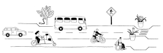

Segundo a Constituição Federal de 1988, todo cidadão brasileiro possui o direito de ir e vir em seu país (artigo 5° parágrafo XV). Mobilidade urbana, como apresentado, é um direito fundamental do cidadão. O conceito se dá como o direito do indivíduo de se deslocar por meio de transportes disponibilizados pelo governo - como ônibus e metrô - pela cidade, para satisfazer suas necessidades básicas: trabalhar, ir ao médico, ir à escola etc.
Entre o século passado e o atual, é possível perceber que a maior parte da sociedade é urbana, como é possível observar no gráfico abaixo:

E, com esse aumento significativo da ocupação nas áreas urbanas, fez-se necessário o deslocamento dessas pessoas para realizar suas atividades cotidianas, e é daí que surgiu a mobilidade urbana e, consequentemente, os meios de deixá-la mais acessível para o público e, consequentemente, garantir uma melhor qualidade de vida, especialmente aos que possuem alguma deficiência. Mas, ao longo do tempo, os deslocamentos foram se tornando mais demorados em virtude de fatores como a má qualidade dos transportes públicos e o alto custo que estes possuem. Surgiram congestionamentos cada vez maiores e uma lentidão no trânsito, levando a perda da qualidade de vida, já que a mobilidade e a acessibilidade são prejudicadas.
Mobilidade diz respeito à facilitação de ir de um lugar a outro, já a acessibilidade é a possibilidade de atingir seu destino, seja com ciclovias para bicicletas, seja com transportes públicos com ferramentas que atinjam a todos os públicos - inclusive aqueles que possuem alguma necessidade especial.
Consoante uma matéria do g1 noticias, “88% dos municípios que têm transporte por ônibus descumprem lei de acessibilidade'', diz IBGE. “Do total de cidades do país, 30% contam com ônibus intermunicipais e 15% têm ciclovias”. Hodiernamente é possível perceber que, no Brasil, a dificuldade para alguém com necessidades especiais em acessar o transporte público é mais complexo que para outras pessoas, graças a má qualidade na infraestrutura dos ônibus. Outrossim, a acessibilidade aos ciclistas também é problematizada com a ausência de ciclovias nas cidades, e, se tem, não são respeitadas.
É necessário que políticas públicas sejam aplicadas para que a mobilidade urbana permita o bem estar social. Portanto, é necessário que o Ministério da Educação, em conjunto com o Ministério de Comunicações, devem promover palestras transmitidas ao vivo ao público, com o intuito de informá-los acerca do assunto, contribuindo para a elaboração de propostas e ações que possam melhorar a acessibilidade e mobilidade urbanas e, consequentemente, a qualidade de vida do cidadão.